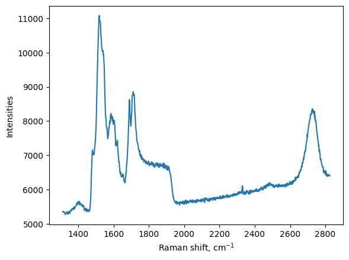
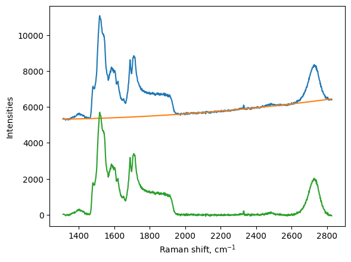
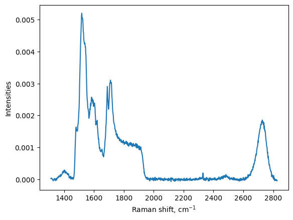
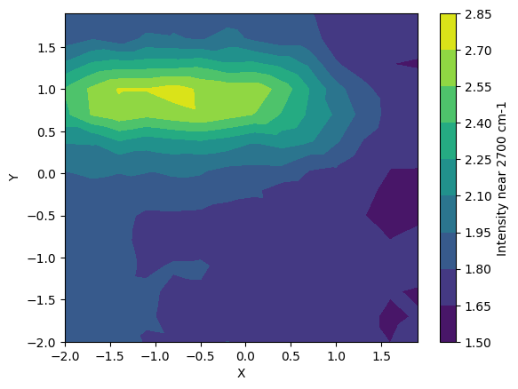
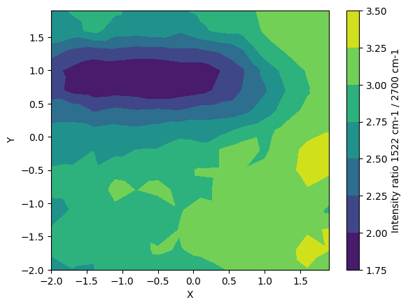
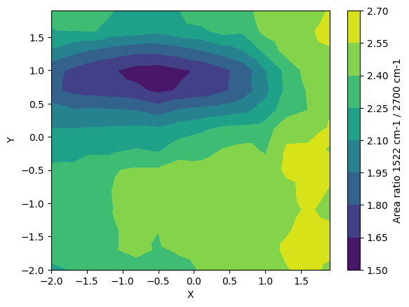

Example: Maps tool of RamPy
Everything is handle through an object maps.
This object allows us to import a map file from a Horiba or Renishaw spectrometer (CSV format), then allows performing some data treatment. More will come in the future.
[1]:
%matplotlib inline
import pandas as pd
import numpy as np
import rampy
from rampy.maps import maps
from rampy import peak_shapes
from scipy.optimize import curve_fit
import matplotlib.pyplot as plt
Data import
This is a Renishaw map
[2]:
# file name
file='./data/4338-NDC1-(31)_4X4.txt'
We create a map object providing the above file name (with relative path)
[3]:
my_map = maps(file, spectrometer_type="renishaw")
This object has attributes that save the X, Y, Raman shift and intensities.
We can access them like my_map.X, my_map.Y, my_map.w, my_map.I
We can use that to make a first plot:
[4]:
plt.figure()
plt.plot(my_map.w, my_map.I[:,1])
plt.xlabel('Raman shift, cm$^{-1}$')
plt.ylabel("Intensities")
plt.show()

Remove background
[5]:
bir = np.array([[1300,1350],[2000,2400],[2800,2850]])
my_map.background(bir, method="poly", polynomial_order=2)
We make a nice figure to see the background
[6]:
plt.figure()
# we plot the original signal
plt.plot(my_map.w, my_map.I[:,1])
# we plot the background
plt.plot(my_map.w, my_map.I_background[:,1])
# we plot the corrected spectra
plt.plot(my_map.w, my_map.I_corrected[:,1])
plt.xlabel('Raman shift, cm$^{-1}$')
plt.ylabel("Intensities")
plt.show()

Normalisation of the signal to total area
[7]:
my_map.normalise(my_map.I_corrected, method = "area")
plt.figure()
# we plot the normalised spectra
plt.plot(my_map.w, my_map.I_normalised[:,1])
plt.xlabel('Raman shift, cm$^{-1}$')
plt.ylabel("Intensities")
plt.show()

Calculate the centroid of the peak near 2700 cm\(^{-1}\)
[8]:
region_of_interest = np.array([[2600,2850]])
my_map.centroid(my_map.I_normalised, region_of_interest)
my_map.intensity(my_map.I_normalised*1000, region_of_interest)
[9]:
plt.figure()
plt.tricontourf(my_map.X, my_map.Y, my_map.I_max)
plt.xlabel("X")
plt.ylabel("Y")
cbar = plt.colorbar()
cbar.set_label("Intensity near 2700 cm-1")

Calculate the ratio of the intensities of peak at 2700 and that at 1522 cm-1, and make a contour plot.
[10]:
region_of_interest_for_ratio = np.array([[1500,1600],[2600,2850]])
my_map.intensity_ratio(my_map.I_normalised, region_of_interest_for_ratio)
plt.figure()
plt.tricontourf(my_map.X, my_map.Y, my_map.I_ratio)
plt.xlabel("X")
plt.ylabel("Y")
cbar = plt.colorbar()
cbar.set_label("Intensity ratio 1522 cm-1 / 2700 cm-1")

Calculate the area ratio of the two peaks to make a contour map
[11]:
region_of_interest_for_ratio = np.array([[1500,1600],[2600,2850]])
my_map.area_ratio(my_map.I_normalised, region_of_interest_for_ratio)
plt.figure()
plt.tricontourf(my_map.X, my_map.Y, my_map.A_ratio)
plt.xlabel("X")
plt.ylabel("Y")
cbar = plt.colorbar()
cbar.set_label("Area ratio 1522 cm-1 / 2700 cm-1")
